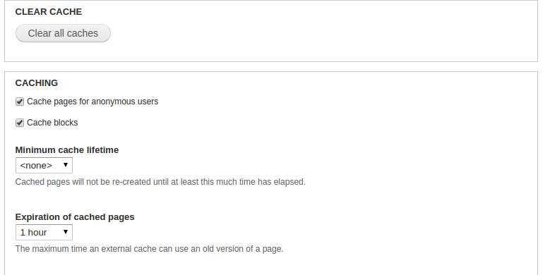

CSS & Javascript Aggregation
What?
- Compress CSS
- Concatenate css and js files together
CSS & Javascript Aggregation
Why?
- Less whitespace == Less bytes
- Less HTTP requests
CSS & Javascript Aggregation
How?
- Included in Core Drupal - Nothing to Install
- Admin -> Config -> Development -> Performance
CSS & Javascript Aggregation
Benefit?
- Moderately faster page loads across the site
Drupal Cache
What?
- Store generated HTML as static files for a period of time
Drupal Cache
Why?
- Less database calls
- Less dynamic construction of HTML
Drupal Cache
How?
- Included in Core Drupal - Nothing to Install
- Admin -> Config -> Development -> Performance

Drupal Cache
Benefits
- Substantially faster page loads for most used pages
Drupal Cache
Drawbacks?
- New data not immediately available
- Slightly harder to develop (but easy to turn off)
APC
What?
- Cache PHP opcode for reuse
APC
Why?
- Reuse compilation over and over
- Stored in memory
APC
How?
- Download and install APC
- Configure how much memory for it to use
sudo apt-get install php-apc
APC
Benefits
- Substantially faster page loads for most used pages
- Overall moderate-high page speed increase
APC
Drawbacks?
- Can make development tough (turn it off for dev)
Caching Proxy
What?
- Varnish or nginx
- Caches thumbnails (and other things too)
- Answers requests for Drupal
Caching Proxy
Why?
- Less request to Drupal
- Less requests to Fedora
- Stored in memory - fast
Caching Proxy
How?
- Sysadmin powers are strong with this one
- But, examples exist for Varnish and nginx
Caching Proxy
Benefits
- Substantially faster page loads
- Flexible to work beyond just images
APC
Drawbacks?
- Memory hungry
- Much more complex server stack
Thanks
Chad Nelson - @bibliotechy
code4lib 2016 in Philly - woohoo!